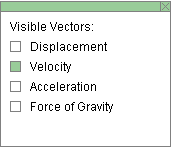
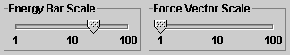
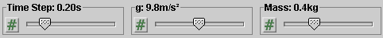
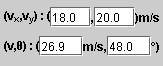

There are four basic control buttons. They are, from left to right:
-
 Rewind. Resets the simulation to the initial
position with the previously chosen initial values. If the
path is displayed, Rewind will allow you to compare
paths traversed under different conditions, e.g.,
different initial velocities.
Rewind. Resets the simulation to the initial
position with the previously chosen initial values. If the
path is displayed, Rewind will allow you to compare
paths traversed under different conditions, e.g.,
different initial velocities.
After clicking Rewind, click Play to restart the motion.
-
 Play/Pause. Starts the motion.
Play/Pause. Starts the motion.
After Play has been clicked, the button will change into the Pause button
 .
.
Clicking Pause will freeze the motion. To resume the motion, click Play once more.
-
 Step. Lets you step through the motion in equal
time steps. The size of the time steps can be adjusted
by means of the Time Step slider. See Point 9 below.
Step. Lets you step through the motion in equal
time steps. The size of the time steps can be adjusted
by means of the Time Step slider. See Point 9 below.
-
 Reset. Resets the applet to its default
setting.
Reset. Resets the applet to its default
setting.
Adjustments in the initial conditions can only be made after first clicking REWIND or RESET.


This toggle button displays/hides the ball's path in cyan.
The path is not erased when you click the Rewind button.

This toggle button displays/hides an x,y coordinate grid that makes it easier to judge the ball's position. The x-axis points to the right and the y-axis points upward.

This toggle button displays/hides the vector panel shown below in which you can select the vectors you want to have displayed. Only one vector, the velocity, is selected in the Vector Panel shown below. This corresponds to what is shown in the image at the Top.

Four vectors can be displayed: Displacement (from the start of the motion) in cyan, Velocity in magenta, Acceleration in orange, and Force of Gravity in green.

When the Coordinates button is selected, clicking anywhere in the applet window will place a "+" marker at the point clicked and display the x,y coordinates of the point. This way you can measure the coordinates of a point. The point can be dragged to a new location as long as the mouse button is depressed and the Coordinates button is selected. Clicking on a "+" will remove it, but only if the Coordinates button is selected at the time.
To deselect the Coordinates button, press on it a second time.


This toggle button displays/hides the draggable Data box shown above. The box contains the following information:
- t: time elapsed since the beginning of the motion
- x: ball's x-coordinate
- y: ball's y-coordinate
- dx: x-component of the ball's displacement since the beginning of the motion
- dy: y-component of the ball's displacement since the beginning of the motion
- ax: x-component of the ball's acceleration
- ay: y-component of the ball's acceleration
- Fgrav,x: x-component of the force of gravity acting on the ball
- Fgrav,y: y-component of the force of gravity acting on the ball
- W = -mgdy: work done on the ball by the force of gravity acting on the ball since the beginning of the motion
- KE: ball's kinetic energy
- PE: ball's (gravitational) potential energy
- E: ball's mechanical energy (equal to KE + PE)
The values shown in the sample image of a Data box above correspond to the situation in the image at the Top.


There are five sliders, two for the display scales for the energy bar and the gravitational force vector, and three for adjusting the size of the time step, the magnitude g of the acceleration due to gravity, and the mass m of the ball.
The two scale factors can be varied from 1 to 100. They are variable continuously. The sliders are arranged logarithmically. The time step can be varied from 0 to 1.00 s in steps of 0.01 s, g from 0 to 20.0 m/s2 in steps of 0.1 m/s2, and m from 0.1 kg to 1.0 kg in steps of 0.1 kg.
Clicking on a slider to the left or right of the slider tab allows fine adjustment of the slider setting.
Clicking on the Input Dialog button  of
a slider (this button is not available with the two scale
sliders) opens a dialog for entering an exact value for
the slider setting. The dialog for the g-slider is
illustrated below. The range in which values can be entered,
from 0.0 m/s2 to 20.0 m/s2 in this
case, is indicated above the data entry field.
of
a slider (this button is not available with the two scale
sliders) opens a dialog for entering an exact value for
the slider setting. The dialog for the g-slider is
illustrated below. The range in which values can be entered,
from 0.0 m/s2 to 20.0 m/s2 in this
case, is indicated above the data entry field.


Four data entry fields are provided for setting the initial velocity, the first two for the x and y components of the velocity, and the last two for the magnitude v and the direction angle q of the velocity. q is measured relative to the positive x-axis.
After typing new values into one or two of the fields, press ENTER to make them effective.
Note that if you enter values for vx and vy and press ENTER, the applet will take these values to be exact and base its calculations on them. You can enter values with more decimal, and the applet will work with the values entered, but will display valaues of vx and vy that are rounded to one decimal. At the same time the applet will display values of v and q to one decimal, which usually will require some round-off.
Vice versa, if you enter values for v and q, the applet will take these to be exact, while displaying values for vx and vy that are rounded to one decimal.
During the motion, the velocity entry fields are constantly being updated and show the current velocity.
When the velocity vector is displayed, the velocity can also be changed by dragging the tip of the velocity vector.
The velocity can only be adjusted after REWIND or RESET, not when the motion is paused.
Before starting the motion, you can drag the ball to a desired starting position. The ball's x and y position coordinates are displayed in the Data box. They are updated throughout the motion, along with the values of other variable quantities.
If you hold the Shift key down while dragging the ball, the ball will move only vertically. This makes it easier to set the ball to a given initial position because one does not have to control the ball's horizontal and vertical coordinates at once. Displaying the Grid may also help in dragging the ball to a specific location.
The energy column on the far right of the applet window consists of two parts,
- the kinetic energy KE of the particle, shown in red,
- and the gravitational potential energy PE of the particle, shown in blue.
The total length of the column is equal to the particle's mechanical energy E = KE + PE.
The applet takes the potential energy to be zero when the ball is at elevation y = 0 and represents PE = 0 by a blue column whose top is at y = 0 as well, i.e., level with the x-axis.
The potential energy column should be imagined starting at negative infinity and rising to the level of the current potential energy like a thermometer column.
The Energy Bar Scale slider lets you adjust the heights of kinetic and potential energy portions of the energy column. If the scale factor set by the slider is doubled, the red kinetic energy portion doubles in height and the part of the potential energy portion above or below the zero level of potential energy doubles in height. Thus, if the ball is at the origin so that PE = 0, doubling the scale factor will have no effect on the height of the blue potential energy portion because 2×0 = 0, while the red kinetic energy portion will double in height.